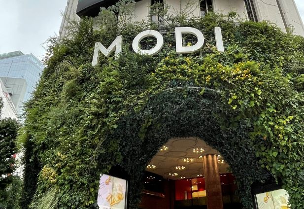
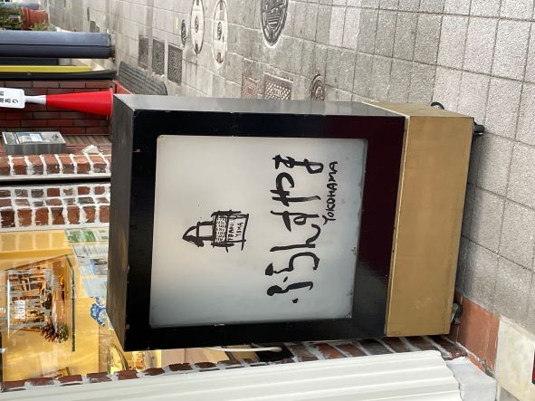
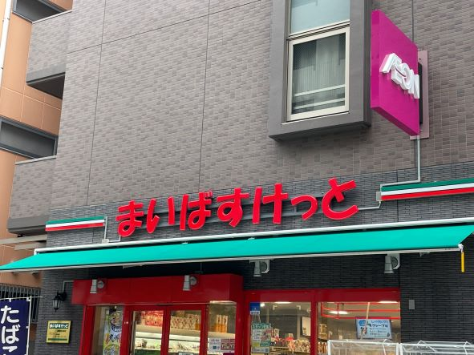

デザインの観察
渋谷モディ

2022．10．09 水口
元はマルイであった。
この写真はビルの下部。渋谷の一等地に佇む。
植物が生い茂る中にスタイリッシュな文字が浮かんでいる。
ふらんすやま 藤棚店

2022．10．10 水口
かつて西区最大の商店街「藤棚商店街」のふじだな一番街にある。
ふらんすやま というお店自体は創業50年を超える。
置き看板。洋菓子屋だが、お店の名前は平仮名かつ筆で書いたよう。
まいばすけっと 藤棚商店街店

2022．10．10 水口
ふじだな一番街より保土ヶ谷駅側に位置する。
まいばすけっと は東京都と神奈川県を中心に展開されるイオングループのお店。
赤字に平仮名の創英角ポップ体が、お店の雰囲気をより身近に感じさせてくれる。
デザイン演習Ⅰ・Ⅱトップページ